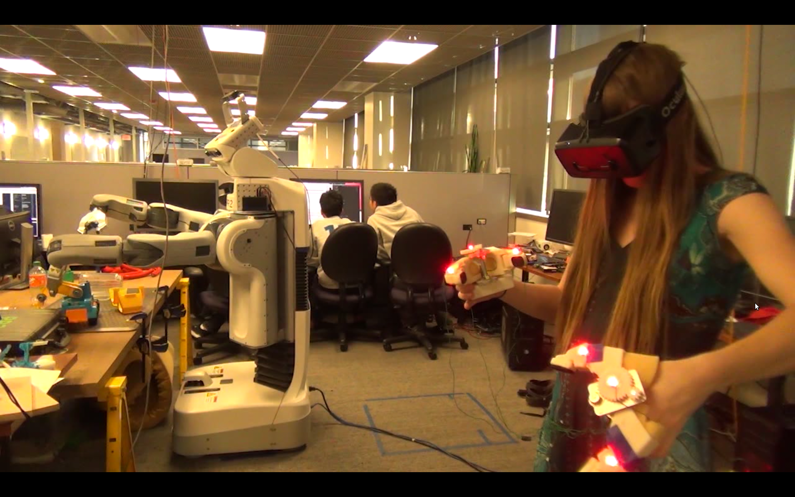
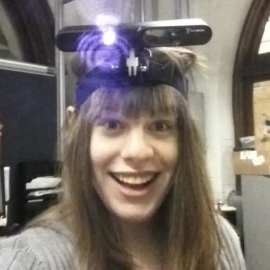
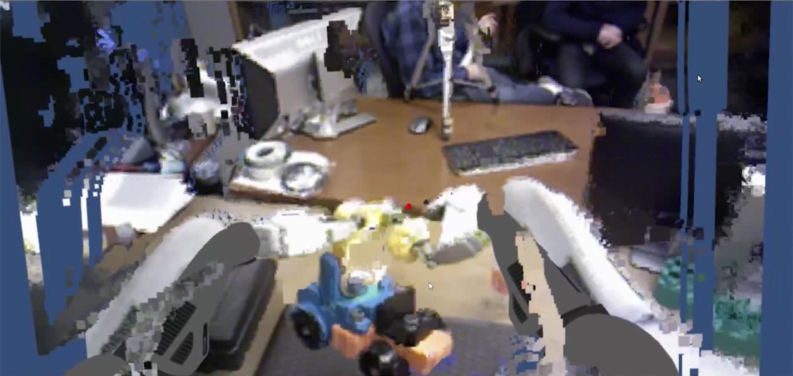
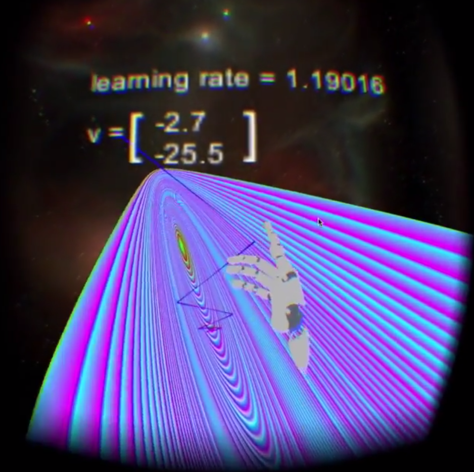

|

|
Zoe McCarthy
PhD Student, UC Berkeley EECS
- Office & Mailing Address:
- 750 Sutardja Dai Hall
- Berkeley CA 94720
- Email:
- 
|
I am a PhD student in the Department of Electrical Engineering and Computer Sciences
at UC Berkeley, working with Pieter Abbeel
and Ken Goldberg.
My current work is on the intersection of virtual reality and robot learning.
Videos
|

|
Mind Meld is a VR robotic teleoperation platform for easily generating robotic demonstrations.
It is built in the Unity3d game engine and receives communication from ROS via websockets and
rosbridge to render robot information.
The user's hands are tracked in 3d printed hollow grippers that are similar to the PR2 robot's grippers.
The position and orientation of those hand held grippers are tracked using the Phase Space motion capture
system and the robot grippers are commanded to match the pose of the held grippers.
It is one piece in a larger framework for teaching robots that I am constructing.
Stay tuned for future work using the demonstrations for training neural network control policies!
Thanks to Stephen McKinley for awesome help filming and editing!
[youtube]
|
|

|
MathVR was an exploration into visualizing and interacting with math in an intuitive way.
Michael Laskey, Kristine Hara, and I built a renderer for 2d quadratic functions in VR.
Using a head mounted Leap Motion, we were able to track hand position, and using nonlinear optimization,
modify the rendered graph to pass through the current hand position.
This allows the user to grab the plot of a function and modify that, instead of modifying
the parameters of the quadratic function in order to gain intuition about this class of functions.
We also rendered the path gradient descent would take to find the minimum of the quadratic function and
the user could move the initial position and the learning rate to see the effect of those manipulations.
[youtube]
|
Publications
|
Jeffrey Mahler, Florian T Pokorny, Zoe McCarthy, A Frank van der Stappen, Ken Goldberg.
Energy-Bounded Caging: Formal Definition and 2D Energy Lower Bound Algorithm Based on Weighted Alpha Shapes.
2016. IEEE RA-L
(To appear)
[PDF]
|
|
Marvin Zhang, Zoe McCarthy, Sergey Levine, Chelsea Finn, Pieter Abbeel.
Learning Deep Neural Network Policies with Continuous Memory States.
2016. Robotics and Automation (ICRA), 2016 IEEE International Conference on
(To appear)
[PDF Preprint]
|
|
Michael Laskey, Jeff Mahler, Zoe McCarthy, F Pokorny, Sachin Patil, Jur van den Berg, Danica Kragic, Pieter Abbeel, Ken Goldberg.
Multi-arm bandit models for 2d sample based grasp planning with uncertainty.
2015. Proc. IEEE Conf. on Automation Science and Engineering (CASE).
[PDF]
|
|
Timothy Bretl, Zoe McCarthy.
Quasi-static manipulation of a Kirchhoff elastic rod based on a geometric analysis of equilibrium configurations.
2014. The International Journal of Robotics Research
[PDF]
|
|
Alex Lee, Yan Duan, Sachin Patil, John Schulman, Zoe McCarthy, Jur van den Berg, Ken Goldberg, Pieter Abbeel.
Sigma hulls for gaussian belief space planning for imprecise articulated robots amid obstacles.
2013. Intelligent Robots and Systems (IROS), 2013 IEEE/RSJ International Conference on
[PDF]
|
|
Timothy Bretl, Zoe McCarthy.
Mechanics and quasi-static manipulation of planar elastic kinematic chains.
2013. Robotics, IEEE Transactions on
[PDF]
|
|
Timothy Bretl, Zoe McCarthy.
Equilibrium Configurations of a Kirchhoff Elastic Rod under Quasi-static Manipulation.
2013. Algorithmic Foundations of Robotics X
[PDF]
|
|
Best Manipulation Paper Award.
Zoe McCarthy, Timothy Bretl.
Mechanics and quasi-static manipulation of planar elastic kinematic chains.
2012. Robotics and Automation (ICRA), 2012 IEEE International Conference on
[PDF]
|
|
Zoe McCarthy, Timothy Bretl, Seth Hutchinson.
Proving Path Non-existence Using Sampling and Alpha Shapes
2012. Robotics and Automation (ICRA), 2012 IEEE International Conference on
[PDF]
|
Research Support
|
|
National Science Foundation Graduate Research Fellowship, 2012
|
© 2016 Zoe McCarthy
|